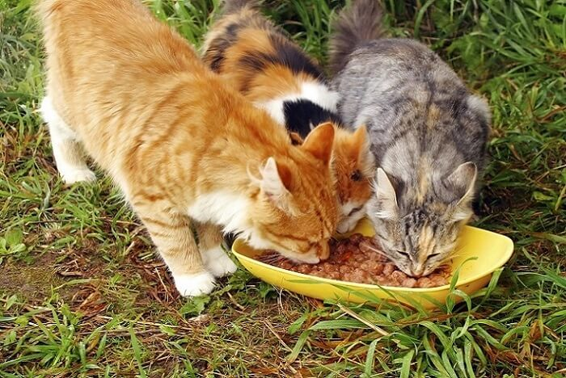

Cooked Rabbit and Poultry

Looks tasty!
Ingredients
- to 2.25 pounds whole carcass rabbit
- 75 to 1 pound boneless chicken or turkey thighs
- 1 cup water
- eggs (raw yolk, white slightly cooked)
- 10,000mg fish oil
- 400 IU vitamin E
- 50mg vitamin B complex
- ,000mg taurine
- 1 tsp lite iodized salt
Instructions
- Grind the rabbit carcass and chop the poultry into small chunks.
- Bake the chicken or turkey thighs at 350°F for 15 to 20 minutes, leaving 50% of the meat raw.
- Combine the dry supplements in a small bowl and mix well.
- Whisk in the fish oil, egg yolks, water to create a slurry.
- Transfer the ground mixture to a large bowl and mix in the slurry.
- Portion out the mixture and refrigerate or freeze.